Benchmark · · 5 min read
Video model bench: when a clip beats code motion
For anyone deciding when a short animated film needs a video model, and when code motion is enough.
Verdict
Animate in code. Buy veo3.1-fast at $0.14 for 8 s only for a face or hand that must change.
- Cut 9 used 3 of 5 veo takes, $1.09 with its gpt-image-2.6-flare keyframes. Code did the rest of the 43.8 s.
- Cut 10 keeps 2 of those takes. A code train replaced the third: veo’s first+last frame mode failed 3 of 3 probes.
- kling-v3 scored best, 4.33, at 2.4 times veo’s price per clip.
- Recheck, 25 Nov: Seedance 2.5 at 720p scored 3.72 against veo3.1-fast's 2.83 over three shots and two seeds, but at $1.31 per usable clip it is 3.11 times veo's cost, past the limit of 3 we set before unblinding. veo stays the pick (recheck).
| When you need | Pick | API price | Measured |
|---|---|---|---|
| Camera moves, folds, a landing, breathing, a train entering a tunnel | Code | $0 a re-render | Cut 9 did all of these in code. A fix is deterministic; a clip can only be re-rolled. |
| A rigid object moving through depth: a train coming out of a tunnel on its rails | Code over an empty still plate | $0.03 for the plate | Won a blind 3-reviewer strip review in cut 10. veo first+last frame mode failed 3 of 3 probes; the cut 9 veo take morphed. First+last frames |
| Motion code does not sell: a hand and face that change expression | veo3.1-fast | $0.14 per 8 s | Quality 4.00 at $0.0177 a second, the cheapest per second after wan2.6. 3 of 5 cut 9 takes were used; cut 10 replaced the tunnel take with code. |
| The most faithful clip, little motion | MiniMax-Hailuo-2.3-Fast | $0.149 per 6 s | Identity 5 and clean 5. It returned service_unavailable on 22 Nov, so the film used veo. |
| Livelier motion | kling-v3 (std) | $0.336 per 5 s | Best mean, 4.33, at 2.4 times veo per clip and 3.8 times per second. |
Frontier recheck, 25 Nov 2026
Seven video models ran three shots from the Ghibli films: a still scene, a camera move over reeds, and the boy on the train. Seedance 2.5 and veo3.1-fast ran each shot twice. Seedance 2.5 at 720p scored 3.72 against veo's 2.83, with 5 of 6 clips usable against 2 of 6. It still misses the rule we set before unblinding: $1.31 per usable clip is 3.11 times veo's $0.42, and the limit was 3. veo3.1-fast stays the kit default; Seedance 2.5 is the better clip when a shot is worth about $1.
seedance-2.5 (720p)
veo3.1-fast
| Model | API price per clip | Clips | Mean | Usable | API $ per usable |
|---|---|---|---|---|---|
| seedance-2.5 (720p) | $1.089 | 6 | 3.72 | 5 of 6 | $1.31 |
| gemini-omni-1.2-flash | $0.279 | 3 | 3.33 | 1 of 3 | $0.84 |
| kling-v4 | $0.700 | 3 | 3.22 | 1 of 3 | $2.10 |
| MiniMax-H3 | $0.286 | 3 | 3.11 | 0 of 3 | none |
| wan3.0-video | $0.329 | 3 | 3.00 | 0 of 3 | none |
| veo3.1-fast | $0.140 | 6 | 2.83 | 2 of 6 | $0.42 |
| veo3.1-quality | $1.000 | 3 | 2.67 | 0 of 3 | none |
- The rule, set before unblinding: a challenger replaces veo3.1-fast only if its mean is at least 0.5 higher, 2 of 3 judges score it above veo on 2 of 3 shots, a full-size look finds no defect veo lacks, and its cost per usable clip is at most 3 times veo's. Seedance 2.5 passed the first three (+0.89; Opus on all three shots, Fable on two) and missed the fourth.
- 8 s test on the boy shot: Seedance 2.5 scored 3.33 at $1.74, Gemini Omni 1.2 Flash 3.00 at $0.45.
- What the full-size look found besides the beetle: MiniMax-H3 moved the camera on a locked-off shot, and veo3.1-fast's first boy clip drew a red streak across the eye. No Seedance clip had a defect veo lacked. On the still scene Gemini Omni and wan3.0 held the locked camera; the first recheck's 480p Seedance boy clip kept a clean, stable face.
- veo3.1-quality had no usable clip at $1.00 each. MiniMax-H3 and wan3.0-video had none either.
- Judges saw 8 frames from the first 5 s of each clip, or from all 8 s in the 8 s test, not playback.
- These numbers replace the first recheck's, which ran one clip each and Seedance at 480p. Total spend on the 30 scored clips: $17.82.
Every clip, by shot
seedance-2.5 (720p), 8 s test
veo3.1-fast
seedance-2.5 (720p)
veo3.1-fast
gemini-omni-1.2-flash
MiniMax-H3
wan3.0-video
| Shot | Model | API price per clip | Size, length | Score | Judges | Usable |
|---|---|---|---|---|---|---|
| Still scene | seedance-2.5 (720p) | 1.089 | 720p, 5 s | 4.33 | 4 / 5 / 4 | yes |
| Still scene | seedance-2.5 (720p) (seed 2) | 1.089 | 720p, 5 s | 3.67 | 4 / 4 / 3 | yes |
| Still scene | veo3.1-fast | 0.140 | 720p, 8 s | 4.00 | 4 / 4 / 4 | yes |
| Still scene | veo3.1-fast (seed 2) | 0.140 | 720p, 8 s | 3.67 | 4 / 4 / 3 | yes |
| Still scene | gemini-omni-1.2-flash | 0.280 | 720p, 5 s | 4.00 | 5 / 4 / 3 | yes |
| Still scene | kling-v4 | 0.700 | 720p, 5 s | 3.00 | 3 / 3 / 3 | no |
| Still scene | MiniMax-H3 | 0.286 | 768P, 5 s | 3.00 | 2 / 4 / 3 | no |
| Still scene | wan3.0-video | 0.329 | 720p, 5 s | 3.33 | 3 / 3 / 4 | no |
| Still scene | veo3.1-quality | 1.000 | 720p, 8 s | 3.33 | 3 / 3 / 4 | no |
| Reeds and beetle, camera move | seedance-2.5 (720p) | 1.089 | 720p, 5 s | 3.33 | 2 / 4 / 4 | yes |
| Reeds and beetle, camera move | seedance-2.5 (720p) (seed 2) | 1.089 | 720p, 5 s | 3.67 | 4 / 4 / 3 | yes |
| Reeds and beetle, camera move | veo3.1-fast | 0.140 | 720p, 8 s | 2.00 | 1 / 1 / 4 | no |
| Reeds and beetle, camera move | veo3.1-fast (seed 2) | 0.140 | 720p, 8 s | 2.00 | 2 / 2 / 2 | no |
| Reeds and beetle, camera move | gemini-omni-1.2-flash | 0.279 | 720p, 5 s | 3.00 | 3 / 3 / 3 | no |
| Reeds and beetle, camera move | kling-v4 | 0.700 | 720p, 5 s | 4.00 | 4 / 4 / 4 | yes |
| Reeds and beetle, camera move | MiniMax-H3 | 0.286 | 768P, 5 s | 3.33 | 3 / 3 / 4 | no |
| Reeds and beetle, camera move | wan3.0-video | 0.329 | 720p, 5 s | 3.00 | 3 / 3 / 3 | no |
| Reeds and beetle, camera move | veo3.1-quality | 1.000 | 720p, 8 s | 3.00 | 3 / 3 / 3 | no |
| Boy on the train | seedance-2.5 (720p) | 1.089 | 720p, 5 s | 4.33 | 5 / 4 / 4 | yes |
| Boy on the train | seedance-2.5 (720p) (8 s test) | 1.737 | 720p, 8 s | 3.33 | 4 / 3 / 3 | no |
| Boy on the train | seedance-2.5 (720p) (seed 2) | 1.089 | 720p, 5 s | 3.00 | 4 / 3 / 2 | no |
| Boy on the train | veo3.1-fast | 0.140 | 720p, 8 s | 3.00 | 2 / 3 / 4 | no |
| Boy on the train | veo3.1-fast (seed 2) | 0.140 | 720p, 8 s | 2.33 | 2 / 2 / 3 | no |
| Boy on the train | gemini-omni-1.2-flash | 0.280 | 720p, 5 s | 3.00 | 2 / 3 / 4 | no |
| Boy on the train | gemini-omni-1.2-flash (8 s test) | 0.446 | 720p, 8 s | 3.00 | 2 / 4 / 3 | no |
| Boy on the train | kling-v4 | 0.700 | 720p, 5 s | 2.67 | 2 / 2 / 4 | no |
| Boy on the train | MiniMax-H3 | 0.286 | 768P, 5 s | 3.00 | 2 / 4 / 3 | no |
| Boy on the train | wan3.0-video | 0.329 | 720p, 5 s | 2.67 | 2 / 3 / 3 | no |
| Boy on the train | veo3.1-quality | 1.000 | 720p, 8 s | 1.67 | 1 / 1 / 3 | no |
| Boy on the train | seedance-2.5 (480p, first recheck) | 0.484 | 480p, 5 s | 3.33 | 4 / 4 / 2 | yes |
Method
Our short film is animated in code. We tested nine image-to-video models on two frames of it. The cheapest good one, veo3.1-fast, then made the three cut 9 shots code could not sell. This page has the test, the clips, what they cost and where they ended up.
Two start frames from the painted film, one prompt each: the boy reaching for the paper bird, and a slow push-in on the wolf over the viaduct. Every model got the same frame and text, one run per cell, on 21 Nov 2026 through the APIMart gateway. Clip length and resolution are each model's default.
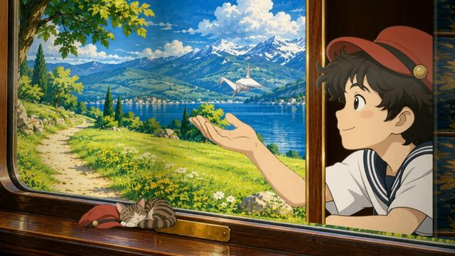
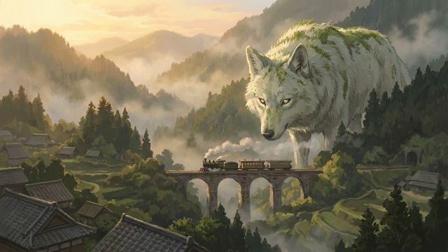
- Identity: the face and the scene hold. Motion: the shot has life. Clean: no artifacts. Each 0 to 5 in half steps, one reviewer, from the clips and 4-frame strips.
- Cost is what the gateway charged per clip; it is divided by the clip length for the per-second charts. Time is submit to finished file.
Frontier
Two image-to-video prompts: the boy reaching for the bird, and a push-in on the wolf. Best value: MiniMax-Hailuo-2.3-Fast, $0.149 for 6 s, and veo3.1-fast, $0.14 for 8 s. kling-v3 std ($0.336 per 5 s) has livelier motion. Image-to-video holds a face for 5 to 8 s but does not fix a different face in the next shot. Native resolution is 480 to 768p.
Speed
Generation took about a minute for wan2.6 and Hailuo, a minute and a half to two for veo and kling, and up to three for seedance-2.0. Nothing here is real time; for a film that is fine, for a live tool it is not.
The 16 clips we paid for
veo3.1-fast
The other 14 clips, 8 models; click one to play
MiniMax-Hailuo-2.3-Fast
kling-v3 (std)
kling-v4-flash
veo3.1-quality
seedance-2.0
seedance-2.5-flash
wan2.6-i2v-flash
wan2.7
| Model | API price per clip | Length | Notes |
|---|---|---|---|
| wan2.6-i2v-flash | 0.084 | 5 s | Cheapest; the train changed colour and shape |
| MiniMax-Hailuo-2.3-Fast | 0.149 | 6 s | Most faithful, clean push-in, little motion |
| veo3.1-fast | 0.140 | 8 s | Natural blink; a thin line artifact across the wolf |
| veo3.1-quality | 1.00 | 8 s | Good, 7 times the price of fast |
| veo3.1-lite (Flow, Plus plan) | 0.25 | 8 s | 10 Flow credits at $0.025; boy only; face and style held, little motion, Veo watermark |
| kling-v3 std | 0.336 | 5 s | Livelier, the crane flies |
| kling-v4-flash | 0.429 | 5 s | Similar to v3, slight face shift |
| seedance-2.0 / 2.5-flash | 0.32 to 0.33 | 5 s | 480p; the background drifts; strongest push-in |
| wan2.7 | 0.332 | 5 s | The boy's expression changed |
All video models in one table
| Kind | Model | API price | Median s | Runs | Size | Quality | Scores |
|---|---|---|---|---|---|---|---|
| video | wan2.6-i2v-flash | $0.0168 per second | 62 | 2 | 1280x720, 30 fps | 2.83 | identity 3.5, motion 3.0, clean 2.0 |
| video | veo3.1-fast | $0.0177 per second | 99.2 | 2 | 1280x720, 24 fps | 4.00 | identity 4.5, motion 4.0, clean 3.5 |
| video | MiniMax-Hailuo-2.3-Fast | $0.0252 per second | 62 | 2 | 1364x768, 24 fps | 4.17 | identity 5.0, motion 2.5, clean 5.0 |
| video | veo3.1-lite (Flow, Plus plan) | $0.0316 per second | 92 | 1 | 1280x720 | 3.83 | identity 4.5, motion 3.0, clean 4.0 |
| video | seedance-2.5-flash | $0.0637 per second | 95.2 | 2 | 854x480, 24 fps | 3.67 | identity 3.0, motion 4.5, clean 3.5 |
| video | seedance-2.0 | $0.0660 per second | 185.6 | 2 | 864x496, 24 fps | 3.50 | identity 3.0, motion 4.0, clean 3.5 |
| video | wan2.7 | $0.0664 per second | 156.9 | 1 | 1280x720, 30 fps | 3.00 | identity 2.5, motion 3.0, clean 3.5 |
| video | kling-v3 (std) | $0.0672 per second | 119.7 | 2 | 1280x720, 24 fps | 4.33 | identity 4.5, motion 4.5, clean 4.0 |
| video | kling-v4-flash | $0.0857 per second | 91.1 | 2 | 1280x720, 24 fps | 4.00 | identity 4.0, motion 4.5, clean 3.5 |
| video | veo3.1-quality | $0.1250 per second | 107.7 | 1 | 1280x720, 24 fps | 4.00 | identity 4.5, motion 4.0, clean 3.5 |
What veo did in the film
Two tries. Attempt B animated 13 ChatGPT keyframes with veo3.1-fast for $1.82; none of its character shots were reused. Cut 9 made 4 new keyframes with gpt-image-2.6-flare from frames of the code-built cut, then 5 veo takes; 3 were in cut 9, and cut 10 keeps 2 after replacing the tunnel take with code (first+last frames).
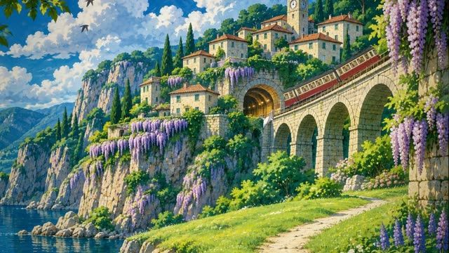
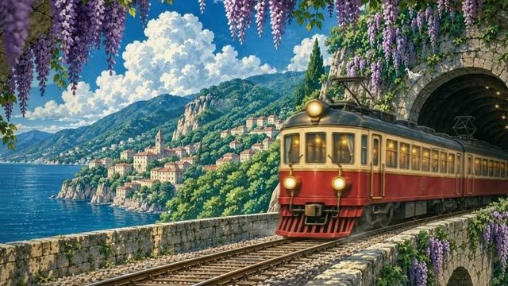
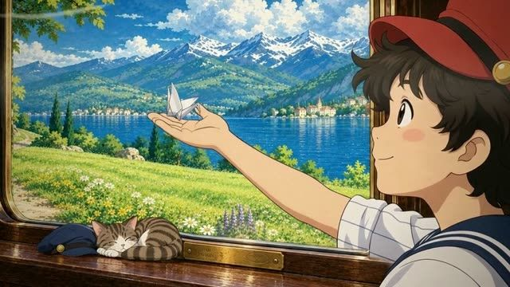
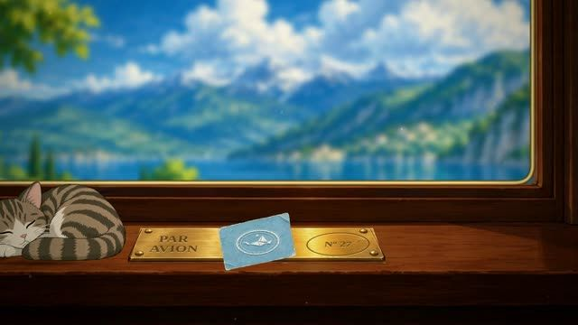
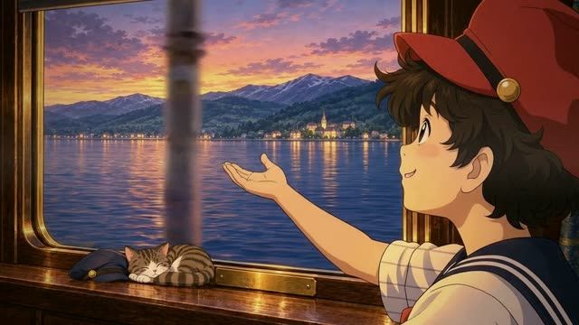
| Run | Clips | USD | Result |
|---|---|---|---|
| Attempt B: ChatGPT keyframes, veo3.1-fast | 13 | $1.82 | Not reused for character shots: a different boy, the camera outside the carriage, a gibberish sign, a stray child, strangers in the tram. |
| Cut 9: 4 flare keyframes | 0 | $0.39 | Built on frames of the code-built cut 8, so the boy and the train match the rest of the film. |
| Cut 9: 5 veo3.1-fast takes | 5 | $0.70 | Used: boy_close, tunnel_b, dusk_a. Rejected: tunnel_a. boy_probe was used until review round 5. |
- Code did the crane landing, the stamp, the folds, the camera push and pull, the cat's breathing and the train entering the portal. In cut 9, veo did the three shots where a body or a machine has to move through space in a way a 2D warp gives away; in cut 10 a code train replaced the machine.
- Never name the forbidden object. The probe prompt said "No bird, no paper" and veo drew a paper scrap in the boy's hand. Only 4.6 to 7.9 s of that take was usable. The next prompt left paper out entirely.
- Start from a keyframe made from your own frames. The ChatGPT keyframes in attempt B looked good alone and did not match the film; the flare keyframes in cut 9 did, because their references were frames of the cut.
- Cut 9 passed 7 review rounds (Fable, Opus and Haiku).
First and last frame mode, cut 10
In cut 9 the train in the tunnel shot morphed: one veo take from one keyframe drifted the nose, the lamps, the car count and the perspective. Cut 10 tried to pin it with more keyframes, using veo3.1-fast with a first and a last frame. That failed 3 of 3 probes. A train drawn in code over an empty still plate won a blind 3-reviewer strip review at $0.03. For a rigid object, code beats more keyframes.
- First+last frame mode always renders 8 s. You cannot ask for a short span between two nearby keys and retime it.
- A13, far to mid: veo invented a different, all-red louvred locomotive that passes the camera, plus a second lit train in the tunnel, then reset to a new train that meets the end key.
- A32 and A34, two adjacent spans: within 0.7 s each take jumps to a new wide framing with the train back in the tunnel mouth, re-runs the whole approach and only meets the end key at 8 s.
- A32 ran backwards by mistake: its end key, k2, has the train nearer the tunnel than its start key, while the prompt said forward. A34 had its keys in the right order and did the same thing, so the order is not the cause.
- veo spend was $0.56 of a $1.20 cap: 3 probes at $0.14 and one $0.14 take of the empty scene for option C. With the plate and the 4 keyframes, cut 10 options cost $0.94. The chain of spans was not bought.
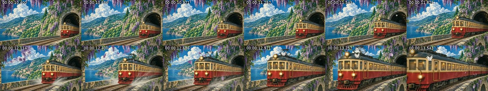
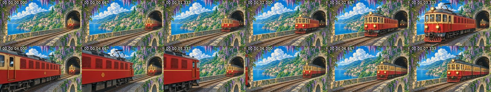
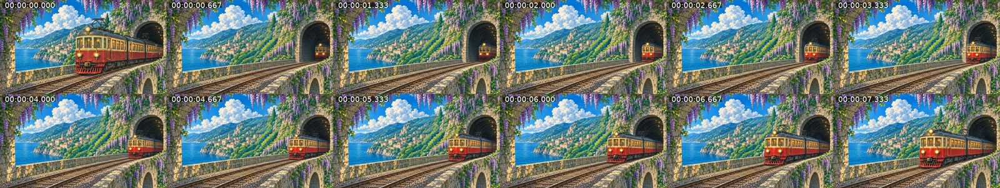
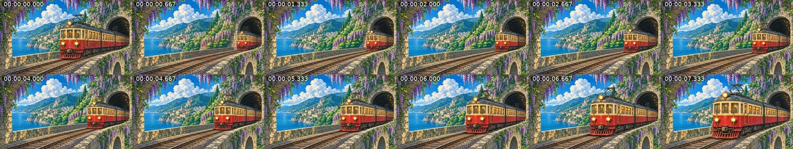
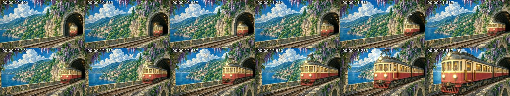
| Option | Cost | Fable | Opus | Haiku |
|---|---|---|---|---|
| B: code train, still plate | $0.03 | 1st | 1st | 1st |
| C: code train, veo plate | $0.17 | 2nd | 3rd | 3rd |
| Cut 9: one veo take | $0.14 | 3rd | 2nd | 2nd |
| A: veo first+last (A13) | $0.24 | 4th | 4th | 4th |
How the code train works, and what the polish pass fixed
- How the code train works. A pinhole camera is fitted to the plate, with the 1.435 m rail gauge giving the camera height. A painted train sprite rides the measured track as a rigid body; car 2 repeats to make 5 cars, the part past the portal is darkened, and motion blur is a zoom about the vanishing point.
- What the first landing lacked: the wisteria was still, the pantograph was cut by the top edge in the last 0.3 s, and the paint did not catch the changing light beyond a fixed dark ramp. A polish pass fixed all three in code with no new generation: a per-cluster sway, a stop 1 m further out, and a cool-to-warm grade along the track. Reviewers found the light change and the 2 px sway subtle at 720p.
- Code the rigid object along measured geometry and keep generation for what deforms, such as the boy’s face and hand in cut 9. The cut 10 film is on the film page; the prompts are under Prompts used.
What the film cost, and would code be cheaper
The film is Ghibli Claude. The cuts so far were built in code from ChatGPT Instant images, with Claude builders and Fable reviews. Image and video model spend is separate and small.
| Way | Cost at API prices | Effective price on a plan | Basis |
|---|---|---|---|
| Code-built cut, art from ChatGPT | Tens of dollars of model tokens per cut | $0 until a limit: tokens on the $200 Claude plan, art on the $20 ChatGPT plan. Past either limit the work stops. The film took 18.6% of a week’s Claude use on our host (film page). | Measured in tokens: about 1.3M builder tokens plus 0.14M Fable planning for the last cut. The one dollar figure we have is $55 to $63 for version 3, and its planner part is an estimate. Art was a $20 plan. |
| Generated, one pass | About $3.2 | Keyframes could be $0 on the ChatGPT plan until the cap; clips are API only | Estimate: 13 keyframes at about $0.10 (attempt B measured $0.09 to $0.11 per keyframe with reference images) plus 13 Hailuo clips at $0.149. |
| Generated, with re-rolls | About $6 to $7 | Keyframes could be $0 on the ChatGPT plan until the cap; clips are API only | Estimate: two tries per shot. Each re-roll is $0.15 to $0.34 for a clip and is random. |
| Generated stills only, in the painted cut | $0.57 | API only as run | Measured: 16 images, 8 in gpt-image-2.6-flare ($0.26) and 8 in flux-3-image ($0.31). The art style clashed with the painted plates. |
| Generated clips, attempt B (measured) | $1.82 | Keyframes were $0 on the ChatGPT plan; the $1.82 of clips is API only | Measured: 13 veo3.1-fast clips at $0.14 from ChatGPT keyframes. Hailuo returned service_unavailable that day. No character shot was reused. |
| Code cut with veo inserts, cut 9 (measured) | $1.09 API | API only as run; builder and review tokens on the Claude plan | Measured: 4 gpt-image-2.6-flare keyframes ($0.39) and 5 veo3.1-fast takes ($0.70), 3 used. Builder and review tokens are on top. |
| Cut 10: the tunnel shot rebuilt (measured) | $0.94 API | API only as run; builder and review tokens on the Claude plan | Measured: an empty plate ($0.03), 4 keyframes ($0.35), 3 first+last veo probes ($0.42) and a veo take of the empty scene ($0.14). The film uses the $0.03 plate with a code train. |
| Fully procedural, no art | No cheaper, likely more | Claude tokens on the plan, $0 until the weekly limit | See below. |
- At API prices, generation is about an order of magnitude cheaper for a first cut ($3 to $7 against tens of dollars of tokens). On our plans the code cut’s tokens and images cost $0 until a limit, and past it the work stops. Video has no plan route here, so clips are always paid at API prices. It is the opposite of cheap for fixing things: a clip cannot be edited, only re-rolled, and a continuity error stays random.
- Going fully procedural would not save money. On the plan it would spend weekly allowance instead of dollars. Art was never the expensive part: the whole image bench was $4.60 and the 16 film stills $0.57. The cost is builder tokens writing and fixing scene code, and a flat or wireframe film needs more of that, not less.
- Where code wins is the marginal cost: a re-render is free, a fix is deterministic and the crying faces drawn in code were good enough. Where generation wins is a new shot at $0.15, with real motion.
- Our plan was: images stay on the cheap gpt-image models, video clips only where a shot needs real motion (the wolf push-in, the tunnel), code for the rest. By cut 10, only a face and a hand shot kept a clip.
- Cut 9 followed it: $1.09 of API for 3 veo inserts in a 43.8 s cut. The estimate rows above priced Hailuo at $0.149; veo3.1-fast at $0.14 for 8 s gives about the same total.
Where the video money went
The 16 test clips were $4.90, half of the first $10 of gateway credit; the rest is itemised on the image bench.
Spend per model: veo3.1-quality was the dearest at $1.00 for one clip
| Model | Clips | USD |
|---|---|---|
| veo3.1-quality | 1 | $1.00 |
| kling-v4-flash | 2 | $0.86 |
| kling-v3 (std) | 2 | $0.67 |
| seedance-2.0 | 2 | $0.66 |
| seedance-2.5-flash | 2 | $0.64 |
| wan2.7 | 1 | $0.33 |
| MiniMax-Hailuo-2.3-Fast | 2 | $0.30 |
| veo3.1-fast | 2 | $0.28 |
| wan2.6-i2v-flash | 2 | $0.17 |
| Total | 16 | $4.90 |
- The two expensive models were not better for our use: veo3.1-quality scored the same as fast, and kling-v4-flash scored below kling-v3.
- A cheaper screen would be one clip per model on the harder frame (the boy), then the second frame only for the top three.
Video models to test next
Ranked by how likely a run is to move the cost-quality frontier, from this bench's own numbers. A price is the model's own nowhere here: each is a tested sibling's, as named. Untested ids come from the APIMart model list (266 ids, 2026-11-22) checked against every model in the results files.
Five candidates ranked, led by veo3.1-lite, plus the unranked list
- veo3.1-lite sibling veo3.1-fast scored 4.0 at $0.14 for 8 s, the page’s pick for motion that code does not sell. One Flow clip of the Lite (boy, 10 plan credits) is in the table; the wolf shot and the API price are not tested.
- MiniMax-Hailuo-2.3 sibling 2.3-Fast is the cleanest clip (clean 5) at $0.149 but scored 2.5 on motion; the full model may fix the weak column.
- kling-3.0-turbo sibling kling-v3 is the top score (4.33) at $0.336; a turbo at a lower price could join the frontier.
- seedance-2.0-fast, seedance-2.0-mini sibling seedance-2.0 scored 3.5 at $0.33; only worth it well under that price.
- wan2.6-i2v sibling wan2.6-i2v-flash is the cheapest clip ($0.084) but scored 2.83.
Limits
- One run per cell, two start frames. veo3.1-quality and wan2.7 have only the boy clip. A lucky draw shows as a result.
- The scores are one reviewer's eyes; the 0.5 steps are a judgement, not a measurement.
- Generation time is one or two clips per model, a rough guide.
- No audio test, first-and-last-frame mode only in the three cut 10 probes, no upscaling test. Native output is 480 to 768p.
- Image-to-video holds a face within a clip, not across clips: each shot needs its own good start frame.
- Prices and speeds are what the gateway reported on 21 and 22 Nov 2026 and will change.
Prompts used
Every video prompt and keyframe prompt, verbatim
Video bench (run_video.py): all 9 models, one run per prompt
Studio Ghibli hand-painted animation look, same art style as the input frame, locked camera, no text, no subtitles, no morphing or changing of the face, characters keep identical appearance.
The boy breathes gently, blinks slowly, his hair moves softly in the wind, his open hand turns slightly as the paper crane drifts. Locked camera.
The giant wolf looms over the viaduct, slow push-in camera, drifting mist rolling past, fur moving slightly in the wind.
Film attempt B, keyframes (keys.py): ChatGPT Instant for all 13; ride, ticket and viaduct3d also through gpt-image-2.6-flare
Hand-painted Studio Ghibli gouache film still, the exact same art style, character designs and colour palette as the reference character sheet, cinematic 16:9, rich painterly background, no text. Characters match the reference sheet exactly: the boy with messy black hair, red cap with gold button and white sailor-collar shirt with navy trim; the girl with long black windblown hair and yellow scarf; the giant white wolf with red kabuki face markings; red-and-cream tram with gold trim.
Wide shot: a long ivy-covered stone arched viaduct over a blue lake, a tiny red-and-cream tram crossing it far away, snowy mountains, village on a cliff, tall golden reeds and a small beetle in the foreground, bright morning.
The red-and-cream tram rolling along a track beside a stone wall toward a tunnel under hanging purple wisteria, lake and village behind; the small boy in the red cap peeks out of a tram window; a small white paper crane flutters near.
Close-up of a hand folding a small white paper card into an origami crane on a wooden brass-edged tram window ledge, lake and mountains blurred in the window behind, warm light.
The red-and-cream tram entering a dark stone tunnel in a cliffside beside an arched viaduct, wisteria hanging, lake far below, a small white paper crane flying beside the train.
Medium shot: the boy in the red cap and sailor collar leaning out of the tram window, happily reaching his open hand toward a white paper crane in the air, lake and mountains behind, a striped tabby cat asleep on the window ledge.
Close-up of a hand pressing a brass rubber stamp onto a small white paper ticket on a wooden window ledge with brass plate, lake blurred behind.
Close-up of the boy in red cap smiling with eyes closed, his open palm held out with a small white paper crane lifting off it, bright meadow behind.
Wide shot: a small girl cyclist riding a bicycle along a dirt path across a green meadow toward a stone cottage, arched viaduct and snowy mountains behind, wisteria framing the left, white paper crane flying in the sky.
Two children, the boy in red cap and sailor collar and the girl with long black hair and yellow scarf, side by side at a tram window looking up in terror, wide frightened eyes, hands over mouths, a huge white shadow reflected in the glass, dusk-coloured sky.
The girl with black windblown hair and yellow scarf riding her bicycle uphill along a lakeside path, a white paper crane near her handlebar bell; behind her a gigantic white wolf with red kabuki face markings rises up out of the reeds, huge jaws opening toward the crane, dramatic menace.
Extreme close-up of the giant white wolf with red kabuki face markings licking its muzzle with its tongue, satisfied, tiny torn blue paper scraps and a few white feathers drifting in the air, dusk sky behind.
Dusk, the boy in red cap and sailor collar at the tram window, face full of grief and fear, holding torn blue paper scraps in his open hand, purple and orange sky, lake behind.
Wide dusk shot: the red-and-cream tram standing on a flooded railway track on a wooden trestle across a purple-pink lake, reflections, broken white paper crane pieces floating on the water, wisteria at left, mountains and village far away.
Film attempt B, clips (animate.py): veo3.1-fast, 8 s
Studio Ghibli hand-painted animation look, same art style as the input frame, no text, no subtitles, no morphing or changing of any face, characters keep identical appearance.
Tall reeds sway in the wind, the beetle crawls slowly, ripples on the water, slow gentle push-in camera.
The girl pedals the bicycle along the path, her hair and yellow scarf stream in the wind, the white wolf looms close behind and its fur ripples, camera tracks alongside.
The red tram glides out of the tunnel toward camera, wisteria petals drift, the paper crane flutters, smooth steady camera.
The tram crosses the stone viaduct, a boy at the window leans out, birds fly past, slow camera drift.
The boy breathes, blinks, smiles and gently turns his open palm as the paper crane lands, soft wind in his hair, locked camera.
The hand presses the brass stamp down onto the paper and lifts it, light slides across the wood, locked camera.
The boy laughs with his eyes closed as the paper crane lifts off his hand and flies away, hair moving in the wind, locked camera.
The girl cycles along the lakeside path away from camera, the crane flies overhead, clouds drift, slow push-in.
Two frightened children at the tram window, trembling, breathing fast, a huge wolf shape moves in the sunset sky behind them, slow push-in.
The white wolf lunges with open jaws toward the girl on the bicycle, her scarf and hair whip back, the crane flutters between them, fast tracking camera.
The white wolf closes its eyes and slowly licks its muzzle, fur moves in the wind, torn paper scraps drift past, slow push-in.
The boy cries, tears fall, his trembling hands hold torn paper scraps, sunset light flickers on his face, locked camera.
The tram races along the lake toward the sunset, the white wolf runs beside it, scraps of paper drift, slow pull-back.
Cut 9, keyframes (gen9.py): gpt-image-2.6-flare
Hand-painted Studio Ghibli anime film still, cel-shaded character over a rich gouache background, cinematic 16:9, no text, no logos. Draw EXACTLY the boy from reference image 1: same face, same messy dark curly hair, same red cap with black band and round gold button, same white sailor-collar shirt with navy stripes, same flat cel colours and line style. Staging: the camera is INSIDE an old train carriage. The boy sits in the right foreground, seen from the chest up in side profile facing left, calm small smile, eyes open. His bare right forearm reaches out to the left through the open window, hand open with the palm up and EMPTY. Behind and beside him is the carriage's own window: a polished dark mahogany frame with thin brass trim, and a broad wooden sill running along the bottom of the picture with a small blank brass plate on it. On the sill at the far left a small striped tabby cat sleeps curled up next to a navy conductor's cap, as in reference image 2. Outside the window, as in reference image 2: bright midday, green flower meadow, deep blue lake, far shore village, snowy mountains, big white clouds. No bird, no paper, nothing in his hand. Clear daylight on the boy, no dark shadow over him.
Edit reference image 1, keeping the exact same boy (same face, hair, red cap with black band and gold button, sailor shirt), the same hand-painted Ghibli anime style, the same cat with navy cap, the same landscape and colours. Change only the staging so the boy is unmistakably INSIDE the train carriage with the camera beside him: his shoulder, chest and upper body fill the lower right corner in the near foreground, unobstructed, running off the bottom edge of the picture; the wooden window sill and the mahogany window frame with brass trim are BEHIND his body, between him and the landscape; his bare forearm passes over the sill and out through the open window, open hand palm up and empty. The sleeping tabby cat and navy cap stay on the sill at the left. A little of the carriage interior (dark wood panel, blue patterned curtain) at the right edge behind his head. Bright midday light. No bird, no paper, no text.
Hand-painted Studio Ghibli anime background style film frame, 16:9, rich gouache colours, bright midday. The exact electric train from reference image 1 (cream upper body, red lower body, dark grey roof, brass trim, round amber headlamps, red cow-catcher, pantograph) is coming OUT of a round stone tunnel portal in a wisteria-covered cliff, the same coastal hill town world as reference image 2. The front car and one and a half carriages are already out in the sun, the rest of the train is still inside the dark tunnel mouth. The train rides exactly on two steel rails with wooden sleepers and gravel; the rails are clearly visible in front of the train and curve gently toward the lower left foreground along the top of an old stone viaduct with a low weathered stone parapet. Low three-quarter camera standing on the viaduct beside the track, the train approaching. A big rough stone archway with hanging purple wisteria frames the top and left edge of the picture in the near foreground. Beyond the parapet: deep blue sea bay, terracotta-roof town, green mountains, towering white clouds. Train windows show only warm lamp glow and curtains. No people, no animals, no birds, no text, no signs, no letters.
Edit this image. Keep the same boy (red cap with black band and gold button, dark curly hair, white sailor shirt with navy collar), the same carriage interior, the same framing and composition exactly: boy large in the right foreground seen from behind his shoulder in profile, his arm reaching out of the open train window, open empty palm facing up at the centre of the frame, the tabby cat asleep on the blue cap on the wooden sill with the brass plate. Change only the time of day and the mood: dusk just after sunset, deep violet-blue sky with pink and orange clouds, a wide dark-blue lake with a small lit village on the far shore and hills, no meadow. Warm amber lamp light from inside the carriage on the varnished wood, on his cheek and on his sleeve. His face is hopeful, a small waiting smile, eyes open looking out at the sky. Hand-painted anime film background style, clean line art, same as the input.
Cut 9, clips (gen9.py): veo3.1-fast, 8 s
The boy sits at the open train window and holds his open hand out, palm up and steady. He breathes gently, blinks, and his eyes follow something small approaching his hand from the left; his smile grows a little and his fingers curl slightly. A soft breeze moves his hair and collar. The sleeping tabby cat breathes slowly, its side rising and falling. Outside, the meadow, lake and mountains drift slowly to the left because the train is moving. Locked camera. No bird, no paper, nothing appears in his hand. Studio Ghibli hand-painted animation look, same art style as the input frame, no text, no subtitles, no morphing, the boy's face and clothes stay identical.
Gentle living hold of this exact frame. The boy keeps his open hand out of the train window, palm up. He breathes, blinks once, his eyes look at his palm and his smile slowly grows; his hand bobs softly down and up once, fingers curl a little. Breeze moves his dark hair and the cap ribbon. The tabby cat sleeps and breathes slowly on the sill. Outside the window the meadow, trees, lake and mountains slide steadily to the left as the train travels. Locked camera, same hand-painted Studio Ghibli animation style, face and clothes unchanged.
The red and cream electric train rolls smoothly forward out of the stone tunnel, its wheels staying on the steel rails, following the gentle curve of the track toward the lower left past the camera. More carriages keep emerging one after another from the dark tunnel mouth behind it. Headlamps glow, the pantograph sways slightly. The camera glides slowly backward and a little to the left along the viaduct, keeping the front car in frame, under the wisteria arch. Wisteria blossoms sway in the wind of the passing train, clouds drift, the sea glitters. Hand-painted Studio Ghibli animation style, same as the input frame, steady, the train keeps its exact shape and colours.
Static locked-off camera. The red and cream electric train drives briskly forward out of the stone tunnel at full travelling speed, wheels rolling on the steel rails along the curve of the track. It grows larger as it approaches, the front car sweeps past close to the camera and exits the frame at the lower left edge, and the following carriages keep streaming out of the dark tunnel mouth and rushing past one after another. The wisteria blossoms are whipped by the wind of the passing train, a few petals fly. Clouds drift, the sea glitters. Hand-painted Studio Ghibli animation, same style as the input frame; the train keeps its exact shape and colours.
Static locked-off camera, hand-painted anime film. The boy holds his open palm out of the train window and waits with a small hopeful smile, his hair moving gently in the wind. After two seconds his smile slowly fades, his eyebrows lower, he looks down at his palm with a sad face, and a single tear rolls down his cheek. His arm stays out, palm open. The cat sleeps on the sill, its side slowly rising and falling as it breathes. The lake glitters and the far shore with its lights drifts slowly past to the left.
Cut 10, the empty plate and the option A keyframes (genkeysA.py and the plate call): gpt-image-2.6-flare
Edit this exact painting. Remove the train completely. Where the train was, show the empty railway track (two steel rails on wooden sleepers and gravel) continuing straight into the dark tunnel mouth, and the dark tunnel interior with a few small warm lamps along the tunnel wall. Keep everything else exactly the same: the same framing and camera, the stone arch with wisteria at the left and top, the stone parapet walls, the sea, the hill town, the cliffs, the clouds, the same hand-painted gouache style, light and colours. No train, no people, no text.
Edit the first image. Keep the painting exactly the same: same framing and camera, same stone arch with wisteria, tunnel, track, parapets, sea, town, clouds, same hand-painted gouache style and light. Keep the SAME train exactly as drawn (the second image shows it): red lower body with a thin gold stripe, cream upper body, three front windows, one big round lamp on the roof above the windows and two round lamps low on the front, a diamond pantograph on the roof, grey-blue roof, carriages joined by dark bellows. Only move the train along the same track: the train is far away, just coming out of the dark tunnel mouth: only the front of the first carriage is out, small, its three lamps glowing; the rest is still inside the dark tunnel. No text, no people.
Edit the first image. Keep the painting exactly the same: same framing and camera, same stone arch with wisteria, tunnel, track, parapets, sea, town, clouds, same hand-painted gouache style and light. Keep the SAME train exactly as drawn (the second image shows it): red lower body with a thin gold stripe, cream upper body, three front windows, one big round lamp on the roof above the windows and two round lamps low on the front, a diamond pantograph on the roof, grey-blue roof, carriages joined by dark bellows. Only move the train along the same track: the train is about one third of the way from the tunnel toward the viewer, smaller than in the first image, its first carriage fully out of the tunnel and the second carriage coming out. No text, no people.
Edit the first image. Keep the painting exactly the same: same framing and camera, same stone arch with wisteria, tunnel, track, parapets, sea, town, clouds, same hand-painted gouache style and light. Keep the SAME train exactly as drawn (the second image shows it): red lower body with a thin gold stripe, cream upper body, three front windows, one big round lamp on the roof above the windows and two round lamps low on the front, a diamond pantograph on the roof, grey-blue roof, carriages joined by dark bellows. Only move the train along the same track: the train is close to the viewer: the front of the first carriage is large, about twice the size it is in the first image, standing on the track in the lower middle of the picture, with the carriages stretching back to the tunnel. No text, no people.
Edit the first image. Keep the painting exactly the same: same framing and camera, same stone arch with wisteria, tunnel, track, parapets, sea, town, clouds, same hand-painted gouache style and light. Keep the SAME train exactly as drawn (the second image shows it): red lower body with a thin gold stripe, cream upper body, three front windows, one big round lamp on the roof above the windows and two round lamps low on the front, a diamond pantograph on the roof, grey-blue roof, carriages joined by dark bellows. Only move the train along the same track: the train is passing very close to the viewer: the front of the first carriage is at the left of the picture, very large, cut by the bottom edge, and the side of the carriages fills the middle and right of the picture back to the tunnel. No text, no people.
Cut 10, clips (gen10.py): veo3.1-fast, 8 s, first and last frame (the plate: first frame only)
Locked-off static camera, no camera movement at all. A hand-painted Ghibli-style scene on a sunny breezy day: the hanging wisteria sways gently in the breeze, a few petals drift, the sea glitters softly, the clouds drift very slowly. The railway track and the tunnel stay completely empty: no train, no vehicle, no people, no animals. Nothing else moves.
Locked-off static camera, no camera movement. The same red and cream vintage electric train glides smoothly out of the dark stone tunnel along the rails toward the viewer at constant speed; the train keeps exactly the same shape, same headlamps, same carriages throughout. Wisteria sways gently in the breeze. Hand-painted anime film style. No cuts, no text.
Locked-off static camera, no camera movement. The same red and cream vintage electric train moves slowly forward along the rails toward the viewer, a short distance only; the train keeps exactly the same shape, same headlamps, same pantograph, same carriages throughout. No other trains. Wisteria sways gently. Hand-painted anime film style. No cuts, no text.
Locked-off static camera, no camera movement. The same red and cream vintage electric train moves forward along the rails toward the viewer, a short distance only; the train keeps exactly the same shape, same headlamps, same pantograph, same carriages throughout. No other trains. Wisteria sways gently. Hand-painted anime film style. No cuts, no text.
Update log
Nine changes from 21 to 25 Nov 2026, newest last
- Test run: 16 clips, 9 models, published inside the image bench.
- Moved to its own page with a chart explorer; fixes from a live check at three widths; test-next list added.
- First+last frame finding from cut 10: 3 veo probes, 7 strips, the blind review and the prompts. Later the same day: the cut 10 polish pass fixed the three tunnel defects in code.
- Source and data moved into one postscript; run_video.py added to the source folder.
- Wren pass: new opening, native size and timed runs in the table, film stills split by model, long parts collapsed.
- Frontier recheck: Seedance 2.5, Gemini Omni 1.2 Flash, MiniMax H3 and Wan 3.0 against veo3.1-fast, three blind judges, $1.66; the account ran out before the camera-move task.
- The film cost table adds the effective price on the $20 ChatGPT and $200 Claude plans; video stays API price only. A stale $1.96 note removed.
- Recheck round 2: Seedance 2.5 at 720p, kling-v4 and veo3.1-quality added, all three shots, two seeds for Seedance and veo, an 8 s test; its numbers replace the first recheck's.
- Google Flow (Plus plan, signed-in browser): one veo3.1-lite boy clip added to the tables and charts; wolf and Flow Music not yet run.
Postscript: source and data
Where the code and data are, for people and agents
The video-model-bench folder on GitHub holds every script and data file behind this page. Its README lists each file in one line.